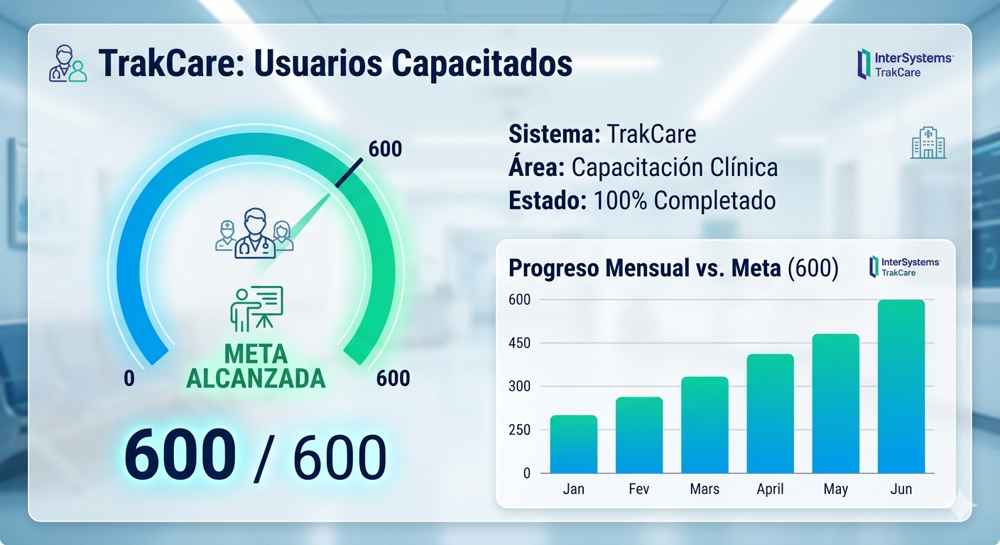
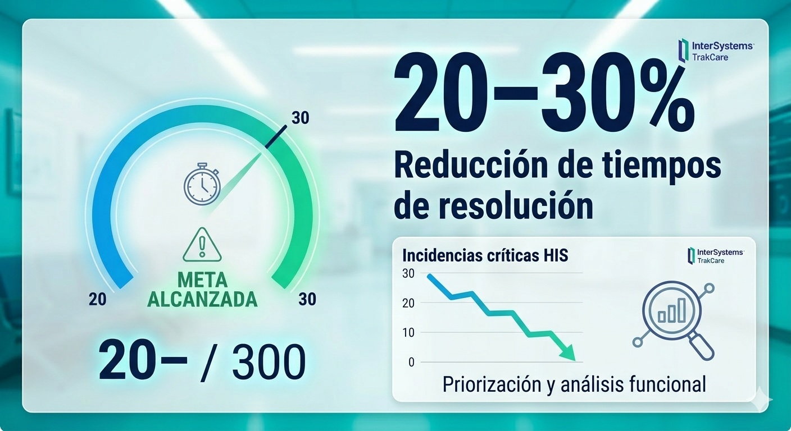
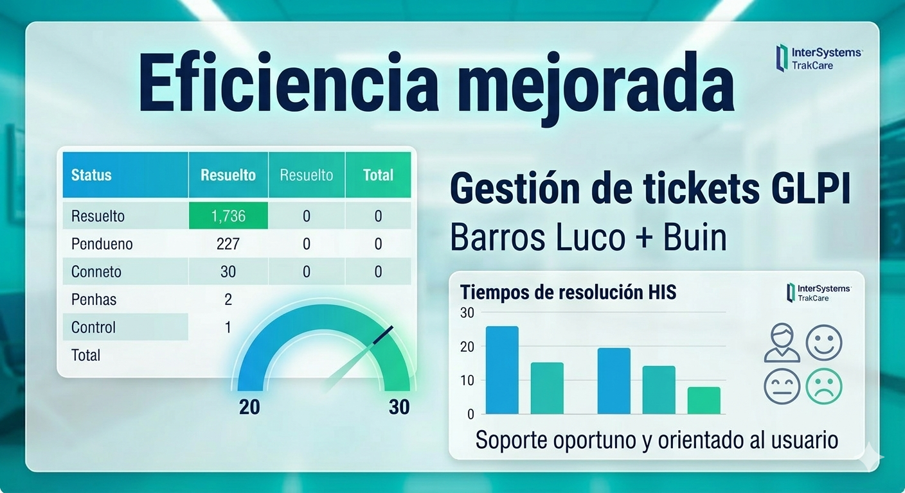
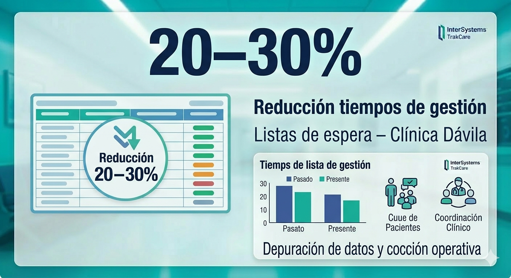

Documentos Profesionales
📄 Currículum Vitae
Descarga mi CV actualizado en Salud Digital e Informática Biomédica.
Descargar CV🎓 Títulos Profesionales
Sobre mí
Perfil Profesional
Profesional en Salud Digital con formación híbrida en Informática Biomédica y TENS, especializada en soporte funcional de sistemas HIS (TrakCare), interoperabilidad, RCE, gestión de incidencias críticas y optimización de procesos clínicos.
Experiencia en instituciones públicas y privadas, actuando como puente entre equipos clínicos y TI, asegurando continuidad operativa, adopción digital y mejora asistencial.
Experiencia Clínica
Atención de pacientes críticos, ventilados y neurológicos. Manejo de VM, bombas de infusión, oxigenoterapia, registros clínicos y apoyo en operativos de listas de espera.
Logros en Salud Digital
📘 Capacitación TrakCare – 600+ usuarios
Formación clínica masiva logrando el 100% de la meta institucional.

⚡ Reducción de tiempos de resolución
20–30% de reducción en tiempos de resolución de incidencias críticas HIS.

🟦 Eficiencia GLPI – Barros Luco + Buin
Optimización de tickets GLPI y soporte oportuno orientado al usuario.

📋 Listas de Espera – Clínica Dávila
Reducción del 20–30% en tiempos de gestión mediante depuración de datos.

🧪 PCR a domicilio – Examedic
100% de cumplimiento en bioseguridad y atención humanizada.